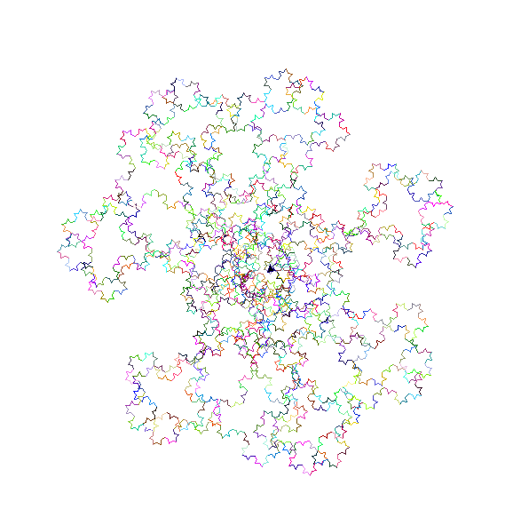
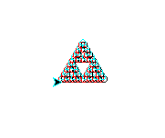

Fractal Fun Pain!
Koch Curve
Basic curve koch_curve(t, 4, 20)

"Very simply, this is a koch curve with a random color for each of its lines, as well as every time it makes a koch curve it turns right 1 degree completing a koch loop every 360 lines.
draw_koch(t, 7, 25)

def draw_koch(t, dep, leng):
t.speed('fastest')
min = 0
max = 255
red = random.randint(min, max)
green = random.randint(min, max)
blue = random.randint(min, max)
if (dep == 1):
t.fd(leng)
t.rt(1)
else:
t.pencolor(red, green, blue)
draw_koch(t, dep-1, leng)
t.pencolor(red, green, blue)
t.lt(60)
draw_koch(t, dep-1, leng)
t.pencolor(red, green, blue)
t.rt(120)
draw_koch(t, dep-1, leng)
t.pencolor(red, green, blue)
t.lt(60)
draw_koch(t, dep-1, leng)
Sierpinski Triangle
Basic triangle sierpinski(t, 5, 200)

"This is a sierpinski triangle with circles instead of triangles, with every 1st circle being red, every 2nd circle being black, and every third circle being cyan in an attempt to create a 3d effect."
sierpinski(t1, 5, 50, 2)

def sierpinski(t, depth, size, scale_factor=1):
if depth == 1:
t.circle(size)
else:
t.speed('fastest')
t.pencolor('red')
sierpinski(t, depth-1, size/2)
t.pu()
t.fd(size/2)
t.pd()
t.pencolor('black')
sierpinski(t, depth-1, size/2)
t.pu()
t.bk(size/2)
t.lt(60)
t.fd(size/2)
t.pd()
t.rt(60)
t.pencolor('cyan')
sierpinski(t, depth-1, size/2)
t.rt(120)
t.pu()
t.fd(size/2)
t.lt(120)
t.pd()
Trees
Basic tree tree(t, 4, 50, 20)

"This is a tree that is not only green with a width of 3, but also creates orbs at each branch intersection that is a random color between red and lime"
def tree(t, depth, size, angle):
col = ['red', 'lime']
t.speed('fastest')
if depth == 0:
t.pencolor('green')
t.fd(size)
t.bk(size)
else:
t.pencolor('green')
t.width(width=3)
t.fd(size)
t.fillcolor(random.choice(col))
t.begin_fill()
t.width(width=1)
t.circle(size / 5)
t.end_fill()
t.width(width=3)
t.rt(angle)
tree(t, depth-1, size, angle)
t.lt(2 * angle)
tree(t, depth-1, size, angle)
t.rt(angle)
t.bk(size)
t.width(width=1)